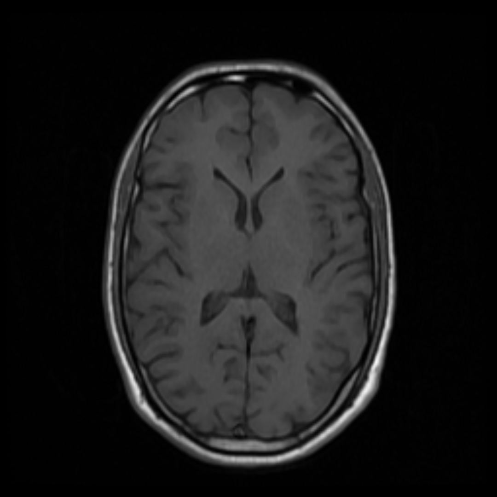
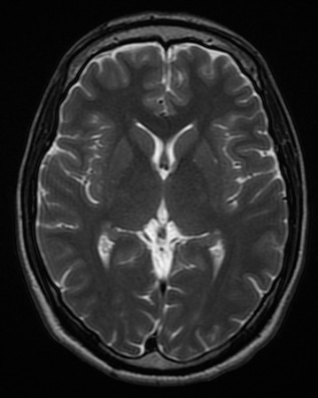

多序列 MRI
[4,H,W]T1、T1 增强、T2、FLAIR 作为四个输入通道，同一位置同时携带不同组织对比。
序列配准与通道顺序成为数据组织的关键。
这页把 MRI 分割拆成一条可运行、可观察的二维路径：读取同一张灰度切片与对应的二值 mask，按患者划分数据，训练 TinyUNet，再用 Dice 和 IoU 检查预测区域。
先确认输入图像和区域答案属于同一位置，再看数据怎样进入网络，最后用图像和指标一起检查分割结果。
先认识 MRI 怎样形成组织对比、分割结果表示什么，再学习如何读取图像、mask 和患者级数据。
MRI：磁共振成像利用磁场、射频脉冲和组织中的氢核信号形成图像，不同序列突出不同的组织对比。
图像分割：图像分割为每个像素或体素分配类别，用轮廓表示肿瘤、器官或其他目标区域。
分割数据通常包含患者编号、MRI 序列、二维切片或三维体积，以及与图像同坐标的 mask。患者编号决定怎样避免同一患者跨训练集和测试集。
MRI 分割可用于肿瘤体积测量、治疗计划、随访变化比较、手术或放疗研究，以及建立影像组学和预后分析的区域基础。
常见研究问题包括不同序列是否互补、边界误差集中在哪里、阈值怎样选择，以及模型面对不同设备和患者时是否稳定。
分割结果是对图像区域的计算估计，不等于完整诊断；临床使用还需要多序列、病史、检查质量和专业人员复核。
人体水和脂肪中含有大量氢原子。患者进入主磁场后，氢核的集体磁化形成可测量的方向；射频脉冲改变磁化状态，脉冲停止后，纵向磁化逐渐恢复，横向磁化逐渐衰减，接收线圈记录这一过程中的信号。T1 描述纵向恢复的时间尺度，T2 描述横向信号衰减的时间尺度。
梯度磁场让不同空间位置的氢核获得不同的频率或相位，采集到的信号经过空间编码和重建后才形成图像。图像上的一个位置因此对应患者身体中的一个空间位置，后续的体素、切片和 mask 都沿用这套空间关系。
屏幕上的亮暗由组织性质、脉冲序列、重复时间、回波时间、接收线圈、重建和预处理共同决定。MRI 灰度没有像 CT 那样可直接跨设备比较的固定绝对单位，同一组织在不同序列或不同扫描条件下可以呈现不同亮度。阅读图像时，灰度需要和序列名称、空间位置一起理解。


脑肿瘤影像通常同时查看多种序列。它们对应同一解剖位置，却对组织含水量、血脑屏障、结构边界和病变内部成分的敏感性不同。多序列的价值来自这些互补对比，前提是各序列经过正确配准，使相同数组位置仍对应同一解剖位置。
| 序列 | 图像中主要观察的线索 | 在分割中的作用 |
|---|---|---|
| T1 | 基础解剖结构，脑脊液通常较暗。 | 提供脑组织边界和整体结构参照。 |
| T1 增强 | 对比剂进入血脑屏障受损区域后可能形成高信号。 | 辅助观察强化肿瘤区域，强化表现需要结合其他序列和标签定义。 |
| T2 | 含水量增加的组织常呈较高信号。 | 辅助观察肿瘤、水肿和其他含水量变化。 |
| FLAIR | 抑制自由脑脊液信号，同时保留脑实质异常含水区域的对比。 | 常用于观察瘤周异常范围和水肿相关区域。 |
医学影像查看器可以在轴位、冠状位和矢状位之间切换。三种视图来自同一个三维体，每一张二维图只是沿某个方向截取的一层。数组中的一个采样位置称为体素；数组形状记录每个方向有多少个采样位置，体素间距记录相邻位置在真实空间中相距多少毫米。DICOM 和 NIfTI 等医学图像文件还会保存体素间距、空间方向和患者坐标等信息。
240×240×155 表示三个方向分别有 240、240 和 155 个采样位置。切片数量和图像宽高属于数组层面的信息。
1×1×5 mm 表示第三个方向更稀疏。体积、距离和三维模型的上下文都要结合体素间距与空间方向理解。
当前体验实践从一张二维、单通道灰度切片开始，使用 [1,H,W] 的输入形状降低第一次操作的复杂度。理解三维体数据后，就能看出这个设置对应的是一条清晰的二维练习路径；多序列、三维输入和多区域标签会在后续内容中逐步展开。
分类给整张图一个答案，分割给每个像素或体素一个空间答案。二分类 mask 中，背景记为 0，目标区域记为 1；多区域任务还可以分别标记水肿、肿瘤核心和强化肿瘤。标签的医学定义决定了模型究竟要画出哪一部分，图像与 mask 必须保持相同的宽高、方向和坐标关系。
脑肿瘤内部可能同时存在强化区、非强化肿瘤、坏死、囊变和水肿；增强表现与对比剂进入组织有关，水肿又常在 T2 或 FLAIR 中更明显。体验版把这些复杂情况压缩为一张灰度切片和一个二值前景区域，先练习“输入图像—对应标签—预测区域”的基本关系，再进入网络和指标。
单通道灰度输入，形状可写成 [H,W]。
背景为 0，目标区域为 1，边界保持在同一坐标。
颜色层覆盖在原图上，用来检查配对和边界位置。
预测概率经过阈值后成为待评价的二值区域。
image → [1,H,W]mask → [1,H,W]DataLoader → [B,1,H,W]logits → sigmoid → prediction
左侧小图来自页面现有的 T1 轴位样本，用于认识 MRI 灰度切片的视觉形式。上方四联图使用课程示意数据，使原始图像、mask、叠加和预测保持可读的空间关系。
Notebook 从 /kaggle/input 递归查找 .tif 和 .png，把 mask 文件名中的 _mask 去掉后检查原图是否存在。上级文件夹名作为患者标识，最终每条记录保存为 (image_path, mask_path, patient_id)。
slice_08.tifslice_08_mask.tif(image, mask, patient)| 字段 | 示例 | 用途 |
|---|---|---|
| image | slice_08.tif | 模型读取的灰度切片 |
| mask | slice_08_mask.tif | 数据集提供的 mask，经二值化后作为目标区域 |
| patient_id | 患者文件夹名 | 患者级划分的分组键 |
ROOT=Path('/kaggle/input')
all_tif=list(ROOT.glob('**/*.tif'))+list(ROOT.glob('**/*.png'))
mask_paths=[p for p in all_tif if '_mask' in p.stem.lower()]
pairs=[]
for m in mask_paths:
img=Path(str(m).replace('_mask',''))
if img.exists():
patient=m.parent.name
pairs.append((img,m,patient))
当前实践使用单张灰度 MRI 和一个前景区域。图像转为灰度后缩放到 128×128，再除以 255；mask 使用最近邻插值，所有大于 0 的像素归为前景。这样，输入和答案拥有相同的空间尺寸。Dataset 返回单张样本 [1,128,128]，当前 Notebook 的 DataLoader 使用 batch_size=16，训练时的批量输入为 [16,1,128,128]。
每个位置都有一个答案。mask 的 0/1 结构让网络学习“哪里属于目标”。
x: [1,128,128]y: [1,128,128]第一个维度由 x[None] 和 y[None] 加入，表示单通道；DataLoader 再加入 batch 维，得到 [B,1,128,128]。
image=Image.open(ip).convert('L').resize((self.size,self.size))
mask=Image.open(mp).convert('L').resize((self.size,self.size),
Image.Resampling.NEAREST)
x=np.asarray(image,dtype=np.float32)/255.0
y=(np.asarray(mask)>0).astype(np.float32)
return torch.from_numpy(x[None]),torch.from_numpy(y[None]),pid
同一患者的相邻切片共享解剖结构和扫描特征。Notebook 用患者标识构成 groups，先划分患者，再获得训练、验证和测试切片索引；最后用集合交集检查三个集合的患者 ID 没有重叠。数据统计先基于配对后的全部切片：患者数量是去重后的患者 ID 数，阳性 mask 是含有前景像素的 mask，空 mask 比例以全部 pair 数为分母。随后取 MAX_SLICES=min(1200,len(pairs)) 进入训练，训练、验证和测试的切片数量以截取后的数据为准。
groups=np.array([x[2] for x in pairs])
idx=np.arange(len(pairs))
gss=GroupShuffleSplit(n_splits=1,test_size=.20,random_state=SEED)
train_idx,test_idx=next(gss.split(idx,groups=groups))
train_groups=groups[train_idx]
gss2=GroupShuffleSplit(n_splits=1,test_size=.20,random_state=SEED)
tr_rel,va_rel=next(gss2.split(train_idx,groups=train_groups))
tr_idx=train_idx[tr_rel]; va_idx=train_idx[va_rel]
assert not (set(groups[tr_idx]) & set(groups[va_idx]) |
set(groups[tr_idx]) & set(groups[test_idx]) |
set(groups[va_idx]) & set(groups[test_idx]))
分割既要判断区域像什么，也要保留边界位于哪里。TinyUNet 用编码器逐步扩大感受野，用解码器恢复分辨率，再把编码阶段的特征通过跳跃连接送回对应层级。Notebook 的网络从 1 个输入通道开始，最后输出 1 个 logit 通道。
| 位置 | 本层输出 shape | 这一层改变了什么 |
|---|---|---|
| 输入 | [B,1,128,128] | B 张切片、1 个灰度通道、128×128 像素。 |
| e1 → p1 | [B,16,128,128] → [B,16,64,64] | 提取局部纹理，池化后空间尺寸减半。 |
| e2 → p2 | [B,32,64,64] → [B,32,32,32] | 增加通道，汇总更大范围的上下文。 |
| 瓶颈 | [B,64,32,32] | 在较小的空间网格上保留 64 个特征通道。 |
| u2 → 拼接 → d2 | [B,32,64,64] → [B,64,64,64] → [B,32,64,64] | 恢复分辨率，与 e2 拼接后重新融合。 |
| u1 → 拼接 → d1 | [B,16,128,128] → [B,32,128,128] → [B,16,128,128] | 恢复到原图大小，与 e1 拼接后补回边界细节。 |
| 输出 | logits [B,1,128,128] | 每个像素一个分数，经 sigmoid 得到概率。 |
z，先计算 p = 1 / (1 + e−z)；再用阈值 t 判断 p ≥ t 的位置，把它写成 1，其余位置写成 0。训练阶段用 BCEWithLogitsLoss 与 soft Dice 组合，概率图可以直接参与反向传播；结果评价再用阈值化 Dice 与 IoU。每个卷积块连续执行两次 3×3 Conv → GroupNorm → ReLU。卷积层学习局部模式，归一化稳定数值，ReLU 提供非线性表达；编码器和解码器只改变通道数与空间分辨率。示例代码使用 GroupNorm、AdamW 和带正类权重的 BCE 与 soft Dice 组合。
class DoubleConv(nn.Module):
def __init__(self,cin,cout):
super().__init__()
self.block=nn.Sequential(
nn.Conv2d(cin,cout,3,padding=1),
nn.GroupNorm(8 if cout >= 8 else 1,cout), nn.ReLU(inplace=True),
nn.Conv2d(cout,cout,3,padding=1),
nn.GroupNorm(8 if cout >= 8 else 1,cout), nn.ReLU(inplace=True))
def forward(self,x):
return self.block(x)
模型输出概率图后，实践使用阈值生成二值预测，再和真实 mask 比较。Dice 强调两块区域的重叠，IoU 用并集作为分母；两者都直接关注前景区域，适合观察病灶分割的覆盖情况。
|P ∩ G|预测区域与真实区域共同覆盖的像素数。2 × |P ∩ G| / (|P| + |G|)同时看预测区域和真实区域，范围通常为 0—1。|P ∩ G| / |P ∪ G|用并集作为分母，重叠越充分，数值越高。2 × |P ∩ G| / (|P| + |G|)P 是预测前景，G 是真实前景。|P ∩ G| / |P ∪ G|交集越大、并集越小，IoU 越高。inter=(pred*y).sum((1,2,3)) union=((pred+y)>0).float().sum((1,2,3)) d=(2*inter+1e-6)/(pred.sum((1,2,3))+y.sum((1,2,3))+1e-6) i=(inter+1e-6)/(union+1e-6)
完成本页教学内容后，返回本项目详情页的“项目材料”区域进入实践项目。实践项目页面会说明配对、网络、训练和评价中的填写位置与检查方式，实践在 Kaggle 中完成；下载到电脑运行属于补充路径。实践模板已经准备好数据读取、Dataset、DataLoader、TinyUNet 外壳和结果保存位置。示例代码使用 AdamW、GroupNorm，以及 0.5 × BCEWithLogitsLoss(pos_weight=5) + 0.5 × soft Dice loss。
| 任务 | 填写位置 | 依据与检查 |
|---|---|---|
| 1 数据核对 | TODO 1：patient_count、positive_masks、empty_ratio | 根据 pairs 和每个 mask 的像素内容统计；随机查看 MRI、mask、overlay 是否同位置。 |
| 2 Dice | TODO 2：阈值化、交集、预测面积和真实面积 | 先把概率图按 threshold 变成 0/1；用简单的全零和完全相同输入检查边界。 |
| 3 卷积块 | DoubleConv 的 self.block | 按两次 3×3 Conv → GroupNorm → ReLU 填写，并用后续 U-Net shape 检查拼接通道。 |
| 4 训练更新 | run_epoch 中标注 TODO 的清梯度、反向传播和更新 | 训练损失使用 soft_dice_score；阈值化 Dice 只用于曲线和测试评价。 |
| 5 测试评价 | TODO 5：验证集阈值表与测试结果 | 比较候选阈值 0.25、0.35、0.45、0.50、0.55、0.65、0.75，用验证 Dice 最高的阈值锁定设置，再在测试集统计 Dice、IoU、空 mask 和预测图。 |
GroupShuffleSplit 获得 train、validation、test 索引，检查患者集合没有交集。opt.zero_grad() logits=model(x) prob=torch.sigmoid(logits) loss=bce(logits,y)+(1-soft_dice_score(prob,y)).mean() loss.backward() opt.step()
loss 和 Dice 曲线回答训练过程如何变化；阈值表回答预测概率如何转成区域；测试图像回答模型在一个具体切片上把哪里画出来。
loss curveDice curvetest overlayresult.jsontask1_data_check.pngMRI、mask 与叠加图task1_training_curve.png训练/验证损失与 Dice 曲线task1_prediction.png测试样本、真实 mask 与预测task1_result.json切片规模、阈值、Dice、IoU、空 mask 统计与 seed下面的图像用于展示 MRI 分割结果：样本均来自测试集中真实 mask 非空的切片，预测图同时保留真实 mask、预测 mask 和 TP/FP/FN 编码。


患者级划分：训练/验证/测试为 2604 / 547 / 778 个切片；训练使用 600 个平衡样本；测试阳性 mask Dice 为 0.4870，阳性 mask IoU 为 0.3725，最佳阈值为 0.75。
T1、T1 增强、T2、FLAIR 作为四个输入通道，同一位置同时携带不同组织对比。
序列配准与通道顺序成为数据组织的关键。
连续切片组成体数据，体素间距和空间方向决定真实距离与体积。
3D U-Net、2.5D 输入和切片后处理利用层间连续性。
一个病例可以同时标注 Whole Tumor、Tumor Core 和 Enhancing Tumor。
多类别或多标签输出需要对应的编码、损失和分区域指标。
1 通道 + 1 二值 mask多通道 / 体数据 / 多区域分区域 + 分病例完成 Notebook 后，按“数据配对 → 患者级划分 → TinyUNet → Dice/IoU → 图像结果”的顺序回看输出文件。
| 文件 | 打开后观察 | 对应教学节点 |
|---|---|---|
task1_data_check.png | MRI、二值 mask、overlay 的空间对应 | 配对切片与二值标签 |
task1_training_curve.png | 训练/验证 loss 和 Dice 的变化 | TinyUNet 训练过程 |
task1_prediction.png | 测试 MRI、真实 mask、模型预测 | 视觉结果与边界偏差 |
task1_result.json | 数据规模、最佳阈值、test Dice、test IoU 与空 mask 统计 | 定量评价 |
结合数据配对、患者级划分、最佳阈值、测试 Dice/IoU、空 mask 统计和一个预测偏差，说明图像结果与数字指标如何相互支持。